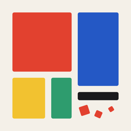

Super Square SmashAnswers to the most common questions. If yours isn't here, get in touch below and we'll get back to you.
Tap any square that touches at least one other square of the same color. The whole connected group smashes, squares above fall down, and new squares drop in from the top. A lone square with no matching neighbor wiggles to show it can't be smashed.
Points equal the group size squared, times ten. Two squares score 40, five score 250, ten score 1,000. A Smasher scores 15 points per square it clears. Any moves you have left when you reach the goal pay a bonus of 60 each.
Smash six or more squares in one tap and a white Smasher tile appears where you tapped. Tap it any time to clear its entire row and column. Smashers fall and move with the board like any other square.
If the goal isn't reached when your moves hit zero, the level ends and you can retry it. Your total score returns to what it was when that level began, so nothing earlier is lost.
No square had a matching neighbor, so no move was possible. The canvas reshuffles itself automatically and play continues. It does not cost a move.
On the level-complete screen, tap a platform. Instagram opens a new Story with your score card ready to post. X opens a pre-filled post, and the card is copied so you can paste it in. TikTok and Facebook save the card to your Photos, copy the caption, and open the app so you can pick the card there. "More" opens the standard iOS share sheet.
Only to save your score card when you share to TikTok or Facebook, which cannot accept images directly from another app. The permission is add-only: Super Square Smash can save new images but can never read or view your existing photos. You can decline and still share through the "More" button.
That platform's app isn't installed on your device. Install it, or use the share sheet to send the card anywhere else.
No. There are no accounts, logins, or sign-ups. Your best score is stored on your device only.
Your best score is stored locally, so it moves with a full device backup and restore but does not sync between devices on its own.
No. Super Square Smash has no analytics, no advertising, and no tracking. See the Privacy Policy for details.
Found a bug or have an idea? Open a support request and include your device model and iOS version so we can reproduce it.